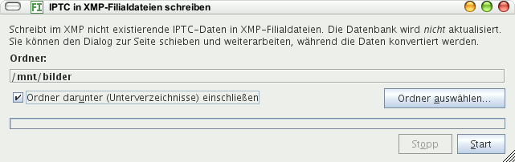

Werkzeuge / IPTC-Daten nach XMP
Mit diesem Menübefehl öffnen Sie einen Dialog, bei dem Sie ein Verzeichnis auswählen können, in dem alle IPTC-Daten der Bilder in XMP-Filialdateien geschrieben werden. Existiert eine XMP-Filialdatei, wird so verfahren:
- Gibt es für einen IPTC-Eintrag keinen XMP-Eintrag, wird der IPTC-Eintrag übernommen
- Gibt es für einen IPTC-Eintrag einen XMP-Eintrag, wird der XMP-Eintrag belassen
- Stichwörter und Kategorien werden angehängt, wenn sie noch nicht in der XMP-Filialdatei existieren
